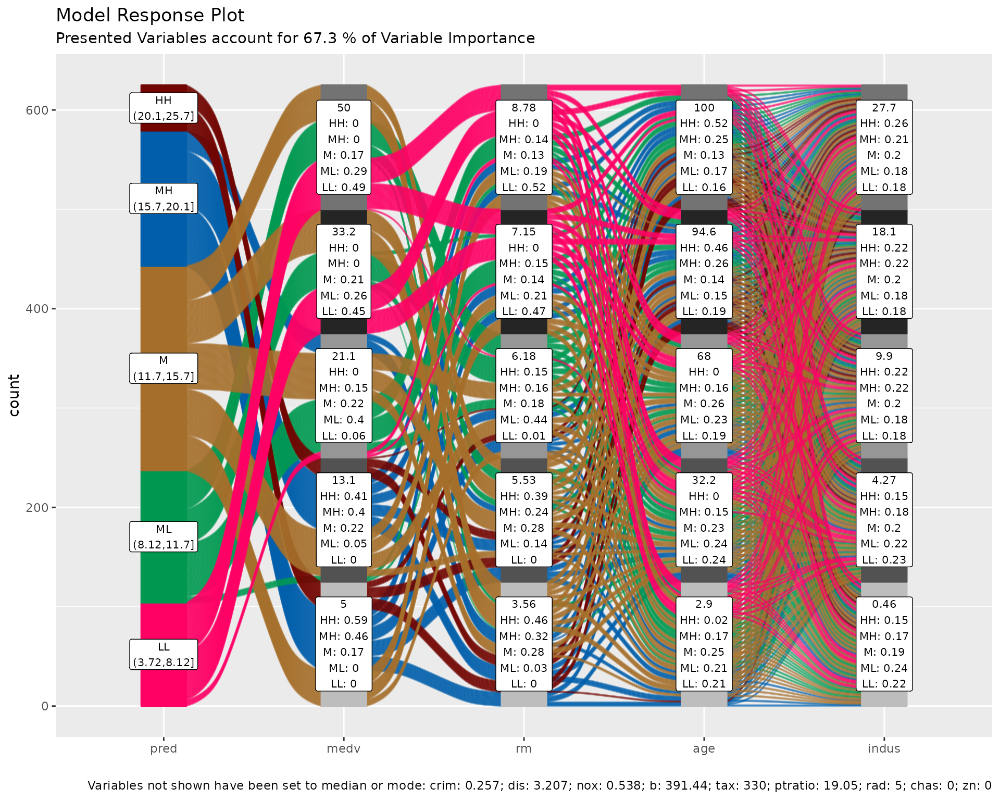
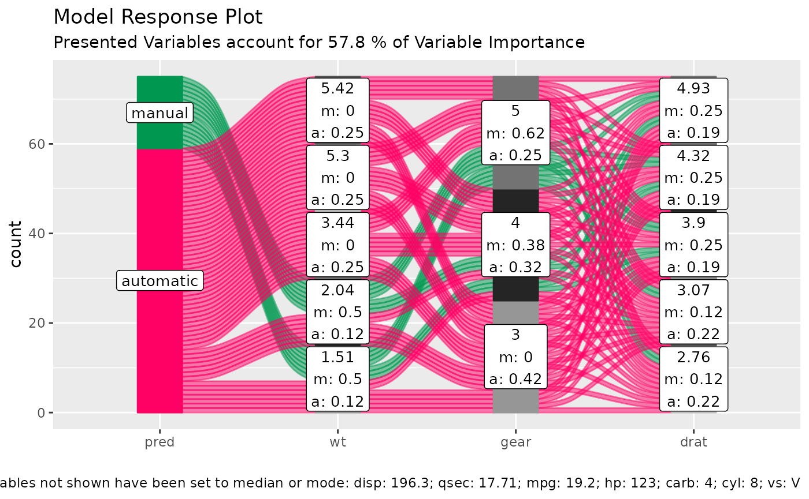

Partial Dependence Alluvial Plots - Visualising Model Response
Bjönr Koneswarakantha
Source:vignettes/model_response.Rmd
model_response.Rmd
suppressPackageStartupMessages( library(dplyr) )
suppressPackageStartupMessages( library(easyalluvial) )
suppressPackageStartupMessages( library(mlbench) )
suppressPackageStartupMessages( library(randomForest) )
suppressPackageStartupMessages( library(recipes) )
suppressPackageStartupMessages( library(earth) )
suppressPackageStartupMessages( library(parcats) )In this tutorial I want to show how you can use alluvial plots to
visualise model response in up to 4 dimensions.
easyalluvial generates an artificial data space using fixed
values for unplotted variables or uses the partial dependence plotting
method. It is model agnostic but offers some convenient wrappers for
parsnip and caret models.
Introduction
Taking a peek
When building machine learning models we are usually faced with a trade-off between performance and interpretability. However there are a lot of model agnostic interpretation techniques that can be applied even to black box models. A good overview can be found here Interpretable Machine Learning by Christoph Molnar.
The most intuitive interpretation techniques visualize the model predictions in response to different data input. They try to visualise how the model behaves in the possible data space, which is discussed in-depth in this paper.
The simplest data space only changes one input dimension, meaning that we sequence through the range of variable while keeping all others at a constant value. We can then plot the model predictions against the values of the variable we have stepped through. Similarly we can create a two dimensional data space in which we ste through the range of 2 variables. We then have to add a third dimension two the resulting plot.
Partial Dependence Plots
Partial Dependence Plots are a little bit more sophisticated. Instead of setting unaffected predictor variables to a constant it uses the values from the training data set and returns the averaged predictions from all rows in the training data set.
Packages for creating partial dependence plots are: - plotmo
- pdp
Partial Dependence Alluvial Plots
Alluvial Plots can plot more than three dimensions side by side. In practice we can plot partial dependence plots with 4 dimension. The limitation being that we have to limit the number of flows on the plot so we can only use 5 steps to range through the predictor variables we want to add to the plot.
data('BostonHousing')
df <- as_tibble( BostonHousing )
library(future)
future::plan("multisession")
m <- parsnip::rand_forest(mode = "regression") %>%
parsnip::set_engine("randomForest") %>%
parsnip::fit(lstat ~., df)
p <- alluvial_model_response_parsnip(m, df, degree = 4, bins = 5,
stratum_label_size = 2.8,
method = "pdp", parallel = TRUE)
p_grid <- p %>%
add_marginal_histograms(data_input = df, plot = FALSE) %>%
add_imp_plot(p = p, data_input = df)
Caret Wrapper
train = caret::train( lstat ~ .
, df
, method = 'rf'
, trControl = caret::trainControl( method = 'none' )
, importance = TRUE )
alluvial_model_response_caret(train, df, degree = 4, bins = 5
, stratum_label_size = 2.8)
Step By Step (build your own wrappers)
We start by creating a model
data('BostonHousing')
df = as_tibble( BostonHousing )
m = randomForest( lstat ~ ., df )and looking at the importance features
| vars | imp |
|---|---|
| medv | 8266.3983 |
| rm | 3584.9271 |
| age | 2776.8424 |
| indus | 2256.1415 |
| crim | 2174.8360 |
| dis | 1984.4639 |
| nox | 1709.3720 |
| b | 715.6978 |
| tax | 667.8710 |
| ptratio | 467.6155 |
| rad | 237.1351 |
| chas | 131.6917 |
| zn | 121.3241 |
When generating the data space we cannot screen an infinite amount of
values per variable but will have to limit ourselves to a fixed number.
Then we want to create all possible combinations between these values
which determines the number of flows. The visual limit for flows on an
alluvial plot is somewhere around 1000 flows. Thus I recommend to go
with 5 values which will result in 5 x 5 X 5 X 5 –> 625 combinations
and the same number of flows. That also leaves some wiggeling room if
one of the top 4 variables is a factor with more than 5 levels.
get_data_space() will split the range of a variable into 3
and pick the median of each split and add the variable minimum and the
maximum to the set.
dspace = get_data_space(df, imp
, degree = 4 # specifies the number of variables
, bins = 5 # the number of values per variable
)
knitr::kable( head(dspace, 10) )| medv | rm | age | indus | crim | dis | nox | b | tax | ptratio | rad | chas | zn |
|---|---|---|---|---|---|---|---|---|---|---|---|---|
| 5 | 3.561 | 2.9 | 0.46 | 0.25651 | 3.20745 | 0.538 | 391.44 | 330 | 19.05 | 5 | 0 | 0 |
| 5 | 3.561 | 2.9 | 4.27 | 0.25651 | 3.20745 | 0.538 | 391.44 | 330 | 19.05 | 5 | 0 | 0 |
| 5 | 3.561 | 2.9 | 9.90 | 0.25651 | 3.20745 | 0.538 | 391.44 | 330 | 19.05 | 5 | 0 | 0 |
| 5 | 3.561 | 2.9 | 18.10 | 0.25651 | 3.20745 | 0.538 | 391.44 | 330 | 19.05 | 5 | 0 | 0 |
| 5 | 3.561 | 2.9 | 27.74 | 0.25651 | 3.20745 | 0.538 | 391.44 | 330 | 19.05 | 5 | 0 | 0 |
| 5 | 3.561 | 32.2 | 0.46 | 0.25651 | 3.20745 | 0.538 | 391.44 | 330 | 19.05 | 5 | 0 | 0 |
| 5 | 3.561 | 32.2 | 4.27 | 0.25651 | 3.20745 | 0.538 | 391.44 | 330 | 19.05 | 5 | 0 | 0 |
| 5 | 3.561 | 32.2 | 9.90 | 0.25651 | 3.20745 | 0.538 | 391.44 | 330 | 19.05 | 5 | 0 | 0 |
| 5 | 3.561 | 32.2 | 18.10 | 0.25651 | 3.20745 | 0.538 | 391.44 | 330 | 19.05 | 5 | 0 | 0 |
| 5 | 3.561 | 32.2 | 27.74 | 0.25651 | 3.20745 | 0.538 | 391.44 | 330 | 19.05 | 5 | 0 | 0 |
Total rows in dspace: 625
| medv | rm | age | indus | crim | dis | nox | b | tax | ptratio | rad | chas | zn |
|---|---|---|---|---|---|---|---|---|---|---|---|---|
| 5 | 5 | 5 | 5 | 1 | 1 | 1 | 1 | 1 | 1 | 1 | 1 | 1 |
Generating model response
pred = predict(m, newdata = dspace)Plotting
The predictions will be binned as well into 5 bins. Binning options
can be passed as a list via the params_bin_numeric_pred
parameter.
p = alluvial_model_response(pred, dspace, imp
, degree = 4, bins = 5
, stratum_label_size = 2.8 )
p
We can see the binned range of predictions and explore by which variable combination they have been created by tracing the coloured flows. The stratum labels of the prediction variables indicate the value of the variable and which fraction of the flows of that colour (prediction variable bin range) pass through that stratum.
Marginal histograms
As well as for other easyalluvial plots we can add
marginal histograms and as a bonus also the feature importance.
p_grid = add_marginal_histograms(p, data_input = df
, plot = F # plot only after adding feature importance
, scale = 50 # to increase distance between ridge plots, Default: 400
) %>%
add_imp_plot( p = p, data_input = df)
We can see the original distribution of the variables, the lines
indicate the position of the values as picked by
get_data_space(). When comparing the distribution of the
predictions against the original distribution of lstat we
see that the range of the predictions in response to the artificial
dataspace do not cover all of the range of lstat. Which
most likely means that all possible combinations of the 4 plotted
variables in combination with moderate values for all other predictors
will not give any extreme values. Which we can further explore, first we
will need to check whether the model is capable of making predictions in
the lower and upper ranges of lsat. We can use
plot_hist() to only plot the distributions and add the
prediction for the training data set using the pred_train
parameter.
pred_train = predict(m)
plot_hist('pred', p, df
, pred_train = pred_train # pred_train can also be passed to add_marginal_histograms()
, scale = 50)
We see that the training prediction also do not completely cover all
of the lstat range but more of it than the predictions from
the artificial data space.
If we wanted to emphasize this we can bin the data space predictions on the basis of the training predictions. In this case it makes sense to increase the number of bins for the predictions in order not to loose resolution on the plot.
p = alluvial_model_response(pred, dspace, imp, degree = 4
, bin_labels = c("LLL","LL", "ML", "M", "MH", "HH", "HHH")
, params_bin_numeric_pred = list(bins = 7)
, pred_train = pred_train
, stratum_label_size = 2.8 )## Warning in .f(.x[[i]], ...): bins (25.2,32.7] of pred are empty## Warning in alluvial_model_response(pred, dspace, imp, degree = 4, bin_labels =
## c("LLL", : binned predictions have only 6 bins, which is less bins than
## 'bin_labels'
plot_hist('pred', p, df, scale = 50)
p_grid = add_marginal_histograms(p, data_input = df
, plot = F # plot only after adding feature importance
, scale = 50 # to increase distance between ridge plots, Default: 400
) %>%
add_imp_plot( p = p, data_input = df)
What feature combinations are needed to obtain predictions in the
lower and higher ranges of lstat?
We can add the training predictions to the training data and assign
the variables not covered by the model response plot to bins. We can
then create an alluvial plot over the entire training dataframe in order
to trace the lstat ranges not covered by the model response
alluvial plot above. Since we are only interested in those observations
we remove all other flows from the plot by setting their color to
NA.
breaks = c( min(pred_train) - 1,min(pred),max(pred),max(pred_train) + 1 )
df_inv = df %>%
select(-lstat) %>%
mutate( pred_train = pred_train
, pred_train = cut(pred_train, breaks) ) %>%
select( pred_train, one_of(imp$vars) ) # order by feature importance
p = alluvial_wide(df_inv, bin_labels = 'min_max'
, stratum_label_size = 3
, col_vector_flow = c('blue', NA, 'orange')
, colorful_fill_variable_stratum = F)## Warning in .f(.x[[i]], ...): bins (-0.668,-0.379],(-0.379,-0.0886] of zn are
## empty
p_grid = add_marginal_histograms(p, df_inv)
We can see that for the upper ranges of lstat a pretty
specific combination values is required from 8 feature variables from
medv until tax only then begin the flows to
scatter over the entire range of the following variables. The lower
range values of lstat start to scatter at crim
or dis. Interestingly there seems to be a set of houses
that branches off from the other houses in the lower range of
lstat predictions already at the third feature,
age. We could potentially explore this further, as a
reminder you can get the binned input data for each alluvial plot by
calling attr(p, "data_key") and trace the variables of
interest.
Advantages
Model response alluvial plots can help us to get an immediate intuitive understanding how predictions of a certain range can be generated by the model. They can be understood by none-statistical stakeholders and invite the viewer to start exploring and question the decision making process of the model while also conveying an appreciation for the model complexity as flows branch out to the variables of lower feature importance.
None-regression models
Works the same way.
df = select(mtcars2, -ids)
m = randomForest::randomForest( am ~ ., df)
imp = m$importance
dspace = get_data_space(df, imp, degree = 3)
pred = predict(m, newdata = dspace,type = 'response')
p = alluvial_model_response(pred, dspace, imp, degree = 3)
p
Limitations
- There is a loss of information when binning the numerical variables
- The combinations generated when making the grid might be outside the feature distribution space (generate combinations that are impossible)
- We only look at the combination of 4 features and disregard the others
To alleviate this you can reduce the complexity of the model by reducing features (take out correlating variables) or use additional model exploration methods such as classical PDPs, ALE plots, Shapely values, etc, …